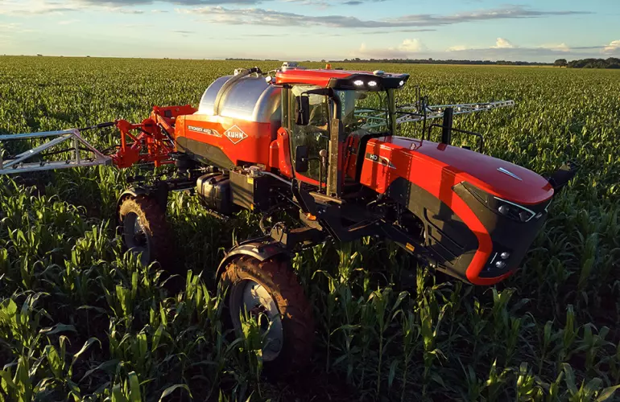

Nossas Máquinas
Confira nossa seleção de máquinas agrícolas de alta qualidade.

Tratores
Trator de alta potência ideal para grandes plantações.

Colheitadeiras
Colheitadeira eficiente para colheitas rápidas e precisas.

Semeadeiras
Semeadeira robusta para uma semeadura uniforme.

Pulverizadores
Pulverizador de alta capacidade para proteção das culturas.

Enfardadeira agrícola
Enfardadeira eficiente para fardos compactos e uniformes.

Arados
Arado resistente para preparo do solo.